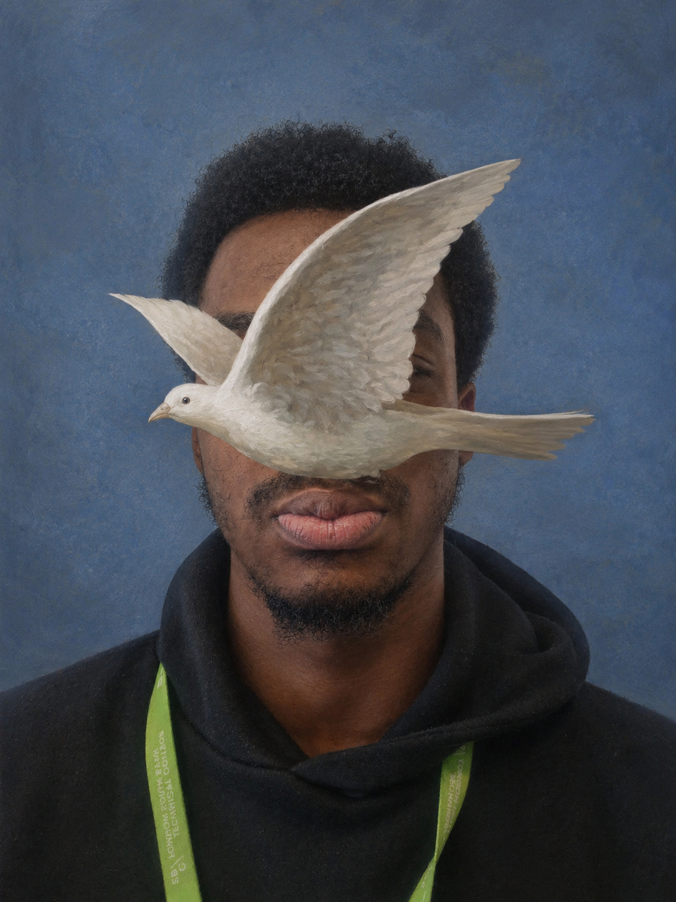

The people who power Hot Beans every day.
Founder & Chief Executive Officer
Jordan founded Hot Beans with a mission to build meaningful digital experiences. With over 15 years in the industry, Jordan leads the company with a focus on innovation, accessibility, and developing new talent.

Operations Manager
David ensures all departments run smoothly, coordinating schedules, resources, and communication across the company.
Technical Manager
Daniel oversees all development teams, focusing on code quality, performance, and mentoring junior developers.
Design Manager
Natsuki leads the design department, ensuring every project meets accessibility standards and delivers a great user experience.
Project Manager
Oliver manages client projects from start to finish, ensuring deadlines, budgets, and quality standards are always met.
HR Manager
Hannah handles recruitment, staff wellbeing, and training programmes to help our team grow and succeed.
Front-End Developer
Albert builds responsive layouts and interactive UI components that bring our designs to life.
Back-End Developer
Brendon develops secure server-side systems, APIs, and database structures that power our applications.
UI/UX Designer
Marcus creates intuitive user experiences and clean interface designs that make our websites easy to use.
Junior Developer
Emily assists with front-end and back-end tasks, learning new technologies while supporting the development team.
QA Tester
James tests all projects for bugs, performance issues, and accessibility problems before launch.
Content Writer
don grang writes clear, engaging content for websites, blogs, and marketing materials.